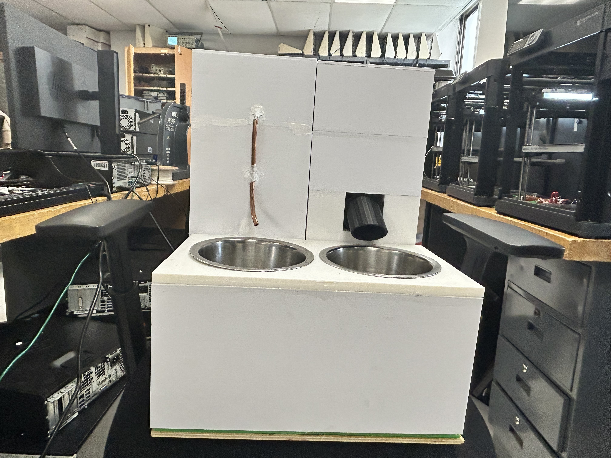

Pet feeder
Introducing a cutting-edge, remotely controlled food and water dispenser for pets, powered by advanced ESP32 technology. This sleek device, featuring a sophisticated design and real-time monitoring, ensures your pets are always well-fed and hydrated. Discover more about this innovative solution as you scroll